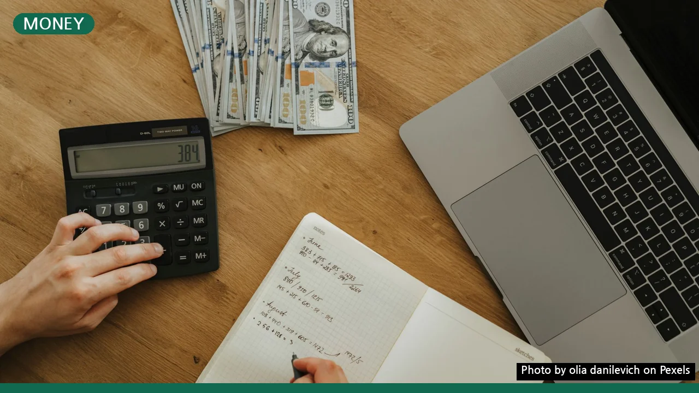
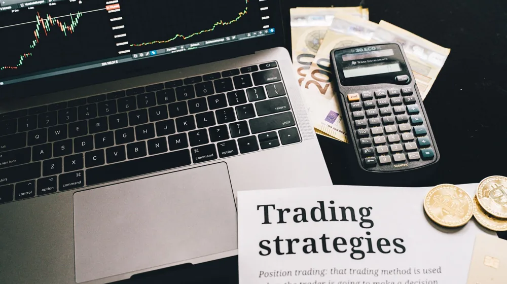

재테크 초보도 쉽게! 첫 포트폴리오, 이 3단계만 따라하면 끝
사진: olia danilevich / Pexels (무료 이미지, 출처 표기)
재테크, 어디서부터 시작해야 할지 막막한가요?

성공적인 투자를 위해 포트폴리오를 구성해야 한다는 말은 많이 들었지만, 정작 무엇부터 시작해야 할지 몰라 고민하는 재테크 초보자들이 많습니다. 이 글은 여러분이 자신만의 투자 원칙을 세우고, 첫 포트폴리오를 성공적으로 구성할 수 있도록 단계별 실질적인 가이드를 제공합니다.
1단계: 투자 목표와 기간 설정으로 나만의 북극성 찾기
투자를 시작하기 전에 가장 먼저 해야 할 일은 명확한 목표를 세우는 것입니다. 막연히 돈을 불리겠다는 생각보다는 '3년 안에 전세자금 5천만 원 모으기', '10년 후 주택 구입 자금 마련', '20년 후 안정적인 노후 자금 확보'처럼 구체적인 목표와 기간을 설정하세요. 목표가 명확해야 그에 맞는 투자 전략과 상품을 선택할 수 있습니다.
기간이 짧으면 비교적 안정적인 자산에, 기간이 길면 높은 수익률을 추구하는 대신 위험이 따르는 자산에도 투자할 수 있는 여유가 생깁니다. 금융감독원 등 공신력 있는 기관의 재무 계산기를 활용해 목표 금액 달성을 위한 월 저축액과 예상 수익률을 가늠해보는 것도 좋은 방법입니다.
2단계: 위험 감수 성향 파악으로 나에게 맞는 그릇 크기 알기
투자의 세계에서는 수익과 위험이 동전의 양면과 같습니다. 높은 수익을 기대하면 그만큼 손실 가능성도 커지죠. 따라서 자신이 어느 정도의 위험을 감당할 수 있는지 객관적으로 파악하는 것이 중요합니다. 대부분의 증권사나 은행 앱에서는 간단한 설문지를 통해 투자 성향을 진단해줍니다.
나이, 소득 수준, 자산 규모, 부채 여부, 투자 경험 등을 종합적으로 고려하여 안정형, 중립형, 성장형, 공격형 등 자신의 성향을 파악해야 합니다. 자신의 성향보다 과도한 위험을 감수하는 투자는 심리적 압박으로 이어져 투자 실패의 원인이 될 수 있습니다.
3단계: 자산 배분 전략 수립과 초보자를 위한 추천 상품
자산 배분(Asset Allocation)은 여러 종류의 자산(주식, 채권, 부동산, 현금 등)에 투자 비중을 나누어 담는 전략입니다. 분산 투자를 통해 특정 자산의 가격 하락 위험을 줄이고, 안정적인 수익을 추구할 수 있습니다. 초보자라면 국내외 주식, 채권, 그리고 현금성 자산을 기본으로 포트폴리오를 구성하는 것이 좋습니다.
특히 ETF(상장지수펀드, 특정 지수의 움직임을 추종하도록 설계된 펀드로 주식처럼 거래 가능)는 소액으로 다양한 자산에 분산 투자할 수 있어 초보자에게 매우 유용한 상품입니다. 특정 국가나 섹터에 편중하기보다는 전 세계 주식시장, 한국 채권, 달러 예금 등 다양한 지역과 상품에 분산하는 것을 고려해보세요.
*위 표는 일반적인 추천이며, 개인의 상황에 따라 조절이 필요합니다. 2024년 6월 기준
포트폴리오 관리와 재조정: 지속적인 성장을 위한 핵심
포트폴리오는 한 번 구성했다고 끝나는 것이 아닙니다. 주기적으로 점검하고 재조정하는 과정(리밸런싱, 자산 배분 비율을 처음 설정한 목표치로 다시 맞추는 과정)이 필수적입니다. 시장 상황이 변하거나 투자 성과에 따라 자산별 비중이 달라지기 때문입니다.
분기별 또는 반기별로 자신의 포트폴리오를 검토하여, 처음 설정한 자산 배분 목표치에서 크게 벗어났다면 다시 그 비율로 맞춰주는 리밸런싱을 실시해야 합니다. 예를 들어, 주식 시장이 크게 올라 주식 비중이 과도하게 높아졌다면 일부 주식을 매도하고 채권 비중을 늘리는 식입니다. 또한, 결혼, 출산, 은퇴 등 인생의 중요한 변화가 있을 때도 포트폴리오를 점검하고 조정해야 합니다.
재테크 초보자를 위한 마지막 조언: 꾸준함이 답이다
재테크는 단거리 경주가 아니라 장거리 마라톤과 같습니다. 시장의 단기적인 등락에 일희일비하기보다는 장기적인 관점에서 꾸준히 투자하고 관리하는 것이 중요합니다. 처음부터 완벽한 포트폴리오를 만들려고 하기보다는, 작은 금액이라도 목표와 성향에 맞춰 시작해보는 용기가 필요합니다. 전문가의 조언을 듣고 스스로 공부하며 자신만의 투자 원칙을 만들어 나가는 것이 성공적인 재테크의 첫걸음이 될 것입니다.
🔗 이 글도 함께 보면 좋아요: 삼성전자 주가, 2024년 투자 전 꼭 알아야 할 3가지 핵심 요소
관련 추천 상품
이 포스팅은 쿠팡 파트너스 활동의 일환으로, 이에 따른 일정액의 수수료를 제공받습니다.